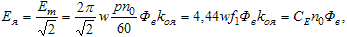
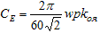
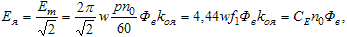
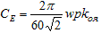

8.2.1. ЭДС генератора
При работе синхронной машины в качестве генератора возбужденный ротор приводится во вращение с частотой n2 внешним механическим моментом (например, моментом гидравлической или паровой турбины).
Магнитодвижущая сила ОВ создаёт магнитный поток Фв, неподвижный относительно полюсов N–S и замыкающийся через сердечник статора (см. рис. 8.1а). Вращающимся магнитным потоком Фв в фазах статорной обмотки индуктируются ЭДС Ея с частотой f1 = pn2 / 60, смещённые во времени на электрический угол 120°.
Рассмотрим ЭДС, индуктируемую в фазе обмотки статора. Конструкция машины обеспечивает синусоидальное распределение магнитной индукции В полюсов в воздушном зазоре, вследствие чего при вращении ротора (индуктора) с частотой n2 = n0 в каждом витке обмотки создаётся синусоидально изменяющаяся ЭДС e1 = 2Bilv, где Bi – магнитная индукция в местах нахождения проводников длиной l витка обмотки; v = πdn0 / 60 – скорость вращения ротора. При числе витков w фазной обмотки статора максимальное значение индуктированной в ней ЭДС
Em = 2wBm lv,
где Bm – максимальное значение магнитной индукции над полюсом ротора.
Рассмотрим ЭДС, индуктируемую в фазе обмотки статора. Конструкция машины обеспечивает синусоидальное распределение магнитной индукции В полюсов в воздушном зазоре, вследствие чего при вращении ротора (индуктора) с частотой n2 = n0 в каждом витке обмотки создаётся синусоидально изменяющаяся ЭДС e1 = 2Bilv, где Bi – магнитная индукция в местах нахождения проводников длиной l витка обмотки; v = πdn0 / 60 – скорость вращения ротора. При числе витков w фазной обмотки статора максимальное значение индуктированной в ней ЭДС
Em = 2wBm lv,
где Bm – максимальное значение магнитной индукции над полюсом ротора.
Заменив синусоидальное распределение магнитной индукции в зазоре средним значением Bcp = 2Bm / π (Bm = πBcp / 2) и преобразовав, имеем Em = 2πw(pn0 / 60)lτBcp, где τ = πd / 2p – полюсное деление.
Учитывая, что произведение lτ = S – сечение поверхности, пронизываемой магнитным потоком Фв= ВсрS полюса, получим действующее значение ЭДС
 (8.2)
где  – постоянный коэффициент ЭДС, зависящий от конструктивных особенностей синхронной машины; kоя – обмоточный коэффициент фазы статора.
Таким образом, частота f1 ЭДС Ея якоря пропорциональна частоте вращения ротора, а её неизменность обеспечивается условием n0 = const. Регулирование величины ЭДС Ея (напряжения U ) на выходе генератора осуществляют изменением магнитного потока Фв, точнее, изменением тока возбуждения Iв в обмотке ОВ (см. рис. 8.2).


Учитывая, что произведение lτ = S – сечение поверхности, пронизываемой магнитным потоком Фв= ВсрS полюса, получим действующее значение ЭДС
 (8.2)
где  – постоянный коэффициент ЭДС, зависящий от конструктивных особенностей синхронной машины; kоя – обмоточный коэффициент фазы статора.
Таким образом, частота f1 ЭДС Ея якоря пропорциональна частоте вращения ротора, а её неизменность обеспечивается условием n0 = const. Регулирование величины ЭДС Ея (напряжения U ) на выходе генератора осуществляют изменением магнитного потока Фв, точнее, изменением тока возбуждения Iв в обмотке ОВ (см. рис. 8.2).